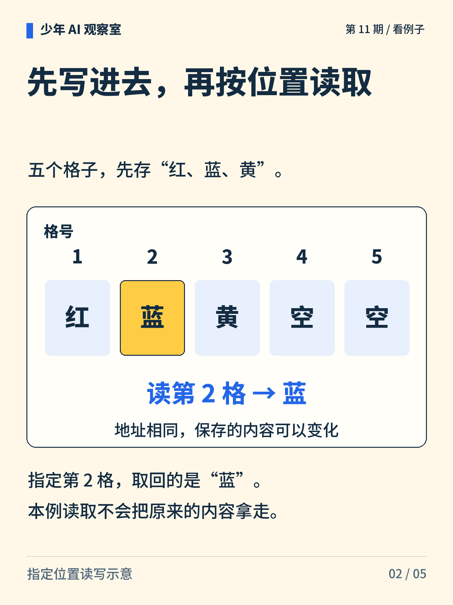
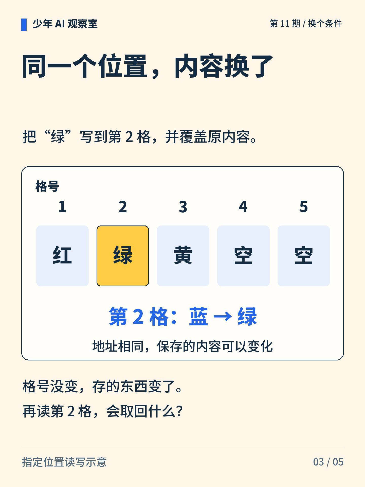
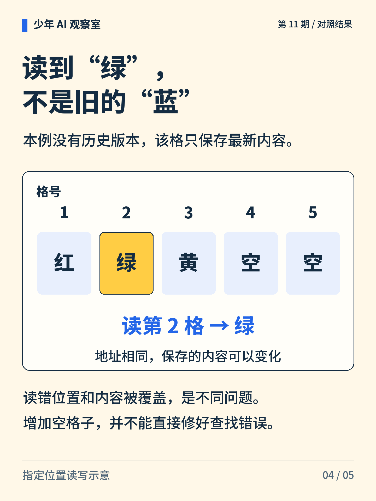
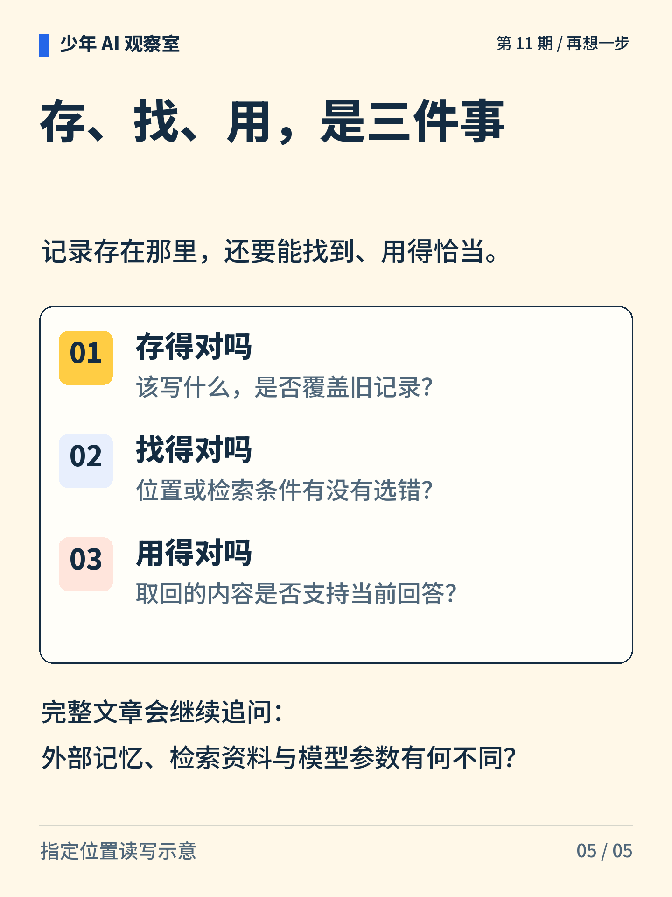

少年 AI 观察室 · 第 11 期
给 AI 一本笔记本，就不会忘了吗？
第 2 格原来存“蓝”，后来被“绿”覆盖。再读第 2 格，应该读到什么？

图解文字
带编号的笔记本格子，提示“存在哪”和“里面是什么”需要区分。

图解文字
五格依次为红、蓝、黄、空、空。读第 2 格得到蓝，读取后内容仍在。

图解文字
把绿写入第 2 格，覆盖原来的蓝，其他格子保持不变。

图解文字
再读第 2 格得到绿。没有历史版本时，不能从这一格恢复旧的蓝。

图解文字
依次检查写入是否正确、查找是否正确、取回内容是否支持当前回答。
想一想
内容明明还在，却读错位置，这与“忘掉了”相同吗？
展开参考思路
不相同。读错位置时，内容可能还在别处；覆盖后如果没有历史版本，旧值就不在这个格子里了。应分别检查查找条件和写入记录，增加空格子本身不能修正错误地址。
存好内容、找到内容和正确使用内容，是三个环节。
这里只演示按指定格号读写，读取不移走内容，覆盖不保留历史。外部存储、检索系统和模型参数不等同。
正文首图为 AI 辅助生成的概念插画；第 2—5 张图按核对过的文字与规则绘制。
延伸阅读资料
文中算例与图解用于说明原理，不是实际模型的测评结果。研究结论对应以下资料。〔1〕 Graves、Wayne、Danihelka，2014，Neural Turing Machines，第 3、4 节。arXiv:1410.5401。
https://arxiv.org/abs/1410.5401
〔2〕 Lewis 等，2020，Retrieval-Augmented Generation for Knowledge-Intensive NLP Tasks。arXiv:2005.11401。
https://arxiv.org/abs/2005.11401
书目信息沿用原稿，本轮未重新核验外部网页的可访问性。